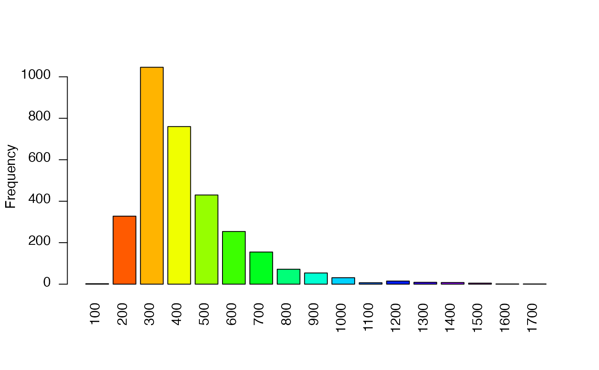
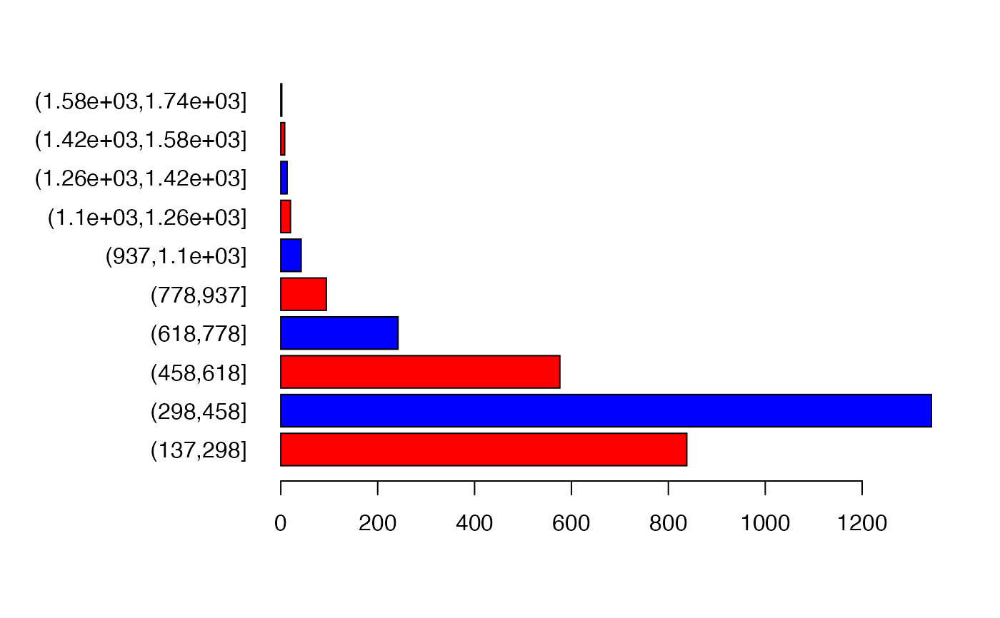

barplot.RdCreate a barplot of the values of a RasterLayer. For large datasets a regular sample with a size of approximately maxpixels is used.
# S4 method for RasterLayer barplot(height, maxpixels=1000000, digits=0, breaks=NULL, col=rainbow, ...)
| height | RasterLayer |
|---|---|
| maxpixels | integer. To regularly subsample very large objects |
| digits | integer used to determine how to |
| breaks | breaks used to group the data as in |
| col | a color generating function such as |
| ... | additional arguments for plotting as in |
A numeric vector (or matrix, when beside = TRUE) of the coordinates of the bar midpoints, useful for adding to the graph. See barplot
f <- system.file("external/test.grd", package="raster") r <- raster(f) barplot(r, digits=-2, las=2, ylab='Frequency')  op <- par(no.readonly = TRUE) par(mai = c(1, 2, .5, .5)) barplot(r, breaks=10, col=c('red', 'blue'), horiz=TRUE, digits=NULL, las=1)  par(op)